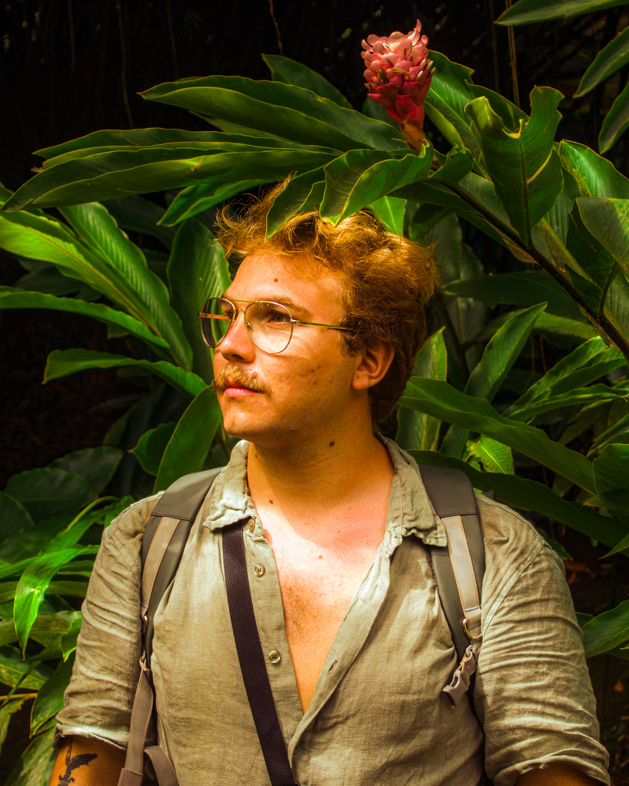

PhD Candidate in Ecology
Université Paul Sabatier Toulouse III (CRBE) · Toulouse, France
Functional diversity of vertebrates and anthropogenic use.

Université Paul Sabatier Toulouse III (CRBE) · Toulouse, France
Functional diversity of vertebrates and anthropogenic use.
CNRS · Montpellier, France
Identification of pyric and herbivore communities in the Mediterranean basin.
CNRS — UMR AMAP · Montpellier, France
Functional traits of Mediterranean woody plants (fire and herbivory).
Biological Station of Paimpont · Brittany, France
Impact of wastewater treatment plants on river ecological quality.
Foyers Epis · Saint-Étienne, France
Night surveillance and medical-social mediation.
University of Burgundy · Dijon, France
LiDAR analysis and mapping of archaeological structures.
Jean Monnet University · Saint-Étienne, France
Biology and Geography library sections.
University of Burgundy · Haut-Velay, France
Prospecting castral sites, spatial analysis.
IRD · Bondy, France
Microbial communities in Technosols.